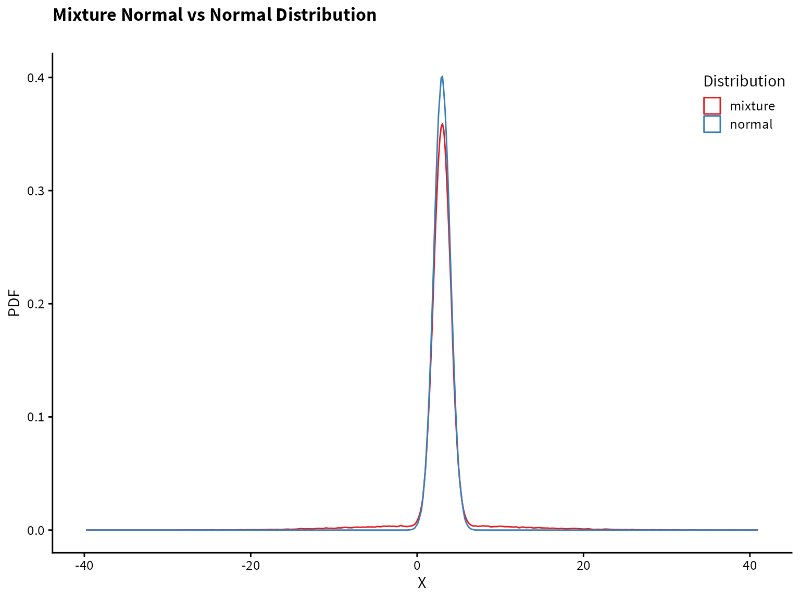
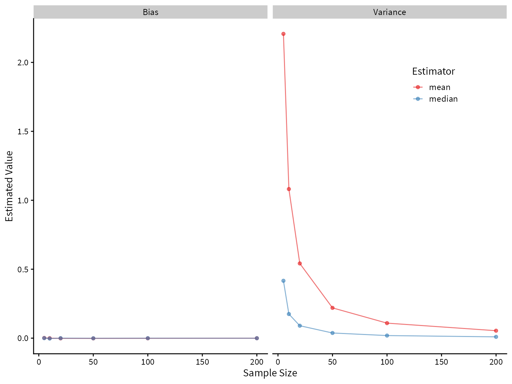

Code
# Load packages
library(tidyverse)
# ggplot2 themes
library(cowplot)
# Formatting of HTML tables
library(kableExtra)
set.seed(7)tidyverse provide a powerful way to do statistical simulations. We demonstrate this approach by evaluating the properties of the mean and median as estimators of center for two distributions.”
# Load packages
library(tidyverse)
# ggplot2 themes
library(cowplot)
# Formatting of HTML tables
library(kableExtra)
set.seed(7)The sample mean and sample median are commonly used estimators for the center of distribution. There is no such thing as a “best estimator” in all circumstances. However, estimators can definitely outperform other estimators in terms of desirable properties (e.g., unbiasedness, low variance, consistency) given a particular circumstance. We can use simulation and mathematical theory to evaluate to performance of estimators given a set of assumptions. Here we focus on using simulation, with the help of tools from the tidyverse.
We begin with a simple example. The true data generating process is \[ X_1, X_2, \ldots X_n \stackrel{iid}{\sim} N(3,1) \]
How will the mean and median perform as estimators of center? Let’s use simulation to find out.
We will use a tibble to store all of our simulation results. First, let’s decide what sample sizes to simulate, and how many trials to run. The more trials we run, the more accurate our simulation results will be – the only cost being increased time to run the simulations.
size <- c(5,10,20,50,100,200)
trial <- 1:1e5Now we use crossing() to generate a tibble that contains every combination of the vectors size and trial. So for every sample size, we are repeating it 100,000 times.
df <- crossing(trial, size)# A tibble: 600,000 × 2
trial size
<int> <dbl>
1 1 5
2 1 10
3 1 20
4 1 50
5 1 100
6 1 200
7 2 5
8 2 10
9 2 20
10 2 50
# … with 599,990 more rowsNow in each row, we want a unique sample of data with the sample size given by that row. We will use purrr::map() to do this.
df$data <- map(df$size, ~rnorm(n=.x, mean = 3, sd=1))The first argument to map is the vector to iterate over, and the second argument is the function to apply. We use .x as a dummy variable to refer to the value in the current iteration. In words, we are mapping each sample size to a random sample of size \(n\) from a normal distribution.
The new column, data, is a vector of lists, where each list contains a unique sample of data. Let’s see what this looks like.
# A tibble: 600,000 × 3
trial size data
<int> <dbl> <list>
1 1 5 <dbl [5]>
2 1 10 <dbl [10]>
3 1 20 <dbl [20]>
4 1 50 <dbl [50]>
5 1 100 <dbl [100]>
6 1 200 <dbl [200]>
7 2 5 <dbl [5]>
8 2 10 <dbl [10]>
9 2 20 <dbl [20]>
10 2 50 <dbl [50]>
# … with 599,990 more rowsNow that we have our data, we can compute the mean and median for each sample.
df$mean <- map_dbl(df$data, ~mean(.x))
df$median <- map_dbl(df$data, ~median(.x))# A tibble: 600,000 × 5
trial size data mean median
<int> <dbl> <list> <dbl> <dbl>
1 1 5 <dbl [5]> 2.80 2.31
2 1 10 <dbl [10]> 3.96 3.55
3 1 20 <dbl [20]> 3.14 3.15
4 1 50 <dbl [50]> 3.07 3.09
5 1 100 <dbl [100]> 3.16 3.32
6 1 200 <dbl [200]> 2.96 2.95
7 2 5 <dbl [5]> 2.52 2.78
8 2 10 <dbl [10]> 2.83 2.80
9 2 20 <dbl [20]> 3.08 3.14
10 2 50 <dbl [50]> 2.93 2.86
# … with 599,990 more rowsThe mean and median of each sample are now in separate columns. However, to get the data into tidy format, also known as long format, we want them in separate rows. Having the data in tidy format allows us to use ggplot2 and other tidyverse functions more effectively. We use pivot_longer to do this.
df <- pivot_longer(df, cols=mean:median, names_to="Estimator", values_to="Estimate")# A tibble: 1,200,000 × 5
trial size data Estimator Estimate
<int> <dbl> <list> <chr> <dbl>
1 1 5 <dbl [5]> mean 2.80
2 1 5 <dbl [5]> median 2.31
3 1 10 <dbl [10]> mean 3.96
4 1 10 <dbl [10]> median 3.55
5 1 20 <dbl [20]> mean 3.14
6 1 20 <dbl [20]> median 3.15
7 1 50 <dbl [50]> mean 3.07
8 1 50 <dbl [50]> median 3.09
9 1 100 <dbl [100]> mean 3.16
10 1 100 <dbl [100]> median 3.32
# … with 1,199,990 more rowsNow we are finally ready to analyze the results of our simulation. First, let’s compute the bias and variance of our estimators for each sample size.
df %>%
group_by(size, Estimator) %>%
summarize(Bias = (mean(Estimate) - 3),
Variance = var(Estimate)) %>%
pivot_longer(Bias:Variance) -> summary_df# A tibble: 24 × 4
# Groups: size [6]
size Estimator name value
<dbl> <chr> <chr> <dbl>
1 5 mean Bias 0.0000212
2 5 mean Variance 0.199
3 5 median Bias 0.00141
4 5 median Variance 0.286
5 10 mean Bias -0.000959
6 10 mean Variance 0.100
7 10 median Bias -0.000314
8 10 median Variance 0.138
9 20 mean Bias 0.000634
10 20 mean Variance 0.0502
# … with 14 more rowsPlotting the bias and variance as a function of sample size, we see that both the mean and median are unbiased estimators of the center of the true distribution, but the median has higher variance. Therefore, we would prefer the mean under these assumptions.
summary_df %>%
ggplot() +
aes(x=size, y=value, color=Estimator) +
geom_line(alpha=0.6) +
geom_point(alpha=0.6) +
facet_wrap(~name) +
scale_color_brewer(palette = "Set1") +
cowplot::theme_cowplot(font_size = 12, font_family = "Lato") +
theme(legend.position = c(0.8,0.8)) +
labs(
x = "Sample Size",
y = "Estimated Value"
)
Plotting the sampling distribution for each of the estimators shows that the median indeed has higher variance.
label_names <- as_labeller(c(`5` = "Sample Size: 5",
`10` = "Sample Size: 10",
`20` = "Sample Size: 20",
`50` = "Sample Size: 50",
`100` = "Sample Size: 100",
`200` = "Sample Size: 200"))
df %>%
ggplot() +
aes(x=Estimate, color=Estimator, fill=Estimator) +
geom_density(alpha=0.3, size=0.8) +
facet_wrap(~size, labeller=label_names) +
geom_vline(aes(xintercept = 3), linetype=2, alpha=0.3) +
coord_cartesian(xlim=c(1,5), ylim=c(0,6)) +
cowplot::theme_cowplot(font_family = "Lato", font_size=12) +
scale_fill_brewer(palette = "Set1") +
scale_color_brewer(palette = "Set1") +
theme(legend.position = c(0.88,0.88)) +
labs(
title = "Normal(3,1) Distribution",
subtitle = "Performance of mean and median",
x="Estimate",
y="PDF"
)
Now let’s take a look at a distribution with heavier tails than the normal. An example is a mixture of normal two distributions.
The data-generating process is this: With probability 0.9, draw from the \(N(3, 1)\) distribution. Otherwise, (with probability 0.1), draw from the \(N(3, 10)\) distribution.
We can write a function to draw from this distribution.
# generates 1 draw from the specifies mixture normal distribution
mixed_normal <- function(){
x <- runif(1)
if (x>0.1) {
return(rnorm(n=1, mean = 3, sd=1))
}
else{
return(rnorm(n=1, mean = 3, sd=10))
}
}
# generates n draws from the specifies mixture normal distribution
rmixed_norm <- function(n){
map_dbl(1:n, ~mixed_normal())
}Plotting the normal distribution and the mixture distribution on top of each other, we see that they are very similar, but the mixture distribution has heavier tails (i.e., more of the probability mass is in the tails compared to the normal distribution).
tibble(normal = rnorm(1e5, mean=3),
mixture = rmixed_norm(1e5)) %>%
pivot_longer(cols=normal:mixture, names_to="Distribution", values_to="value") %>%
ggplot() +
aes(x=value, color=Distribution) +
geom_density(alpha=0.7)+
cowplot::theme_cowplot(font_family = "Source Sans Pro", font_size=12) +
scale_color_brewer(palette = "Set1") +
theme(legend.position = c(0.88,0.90)) +
labs(
title = "Mixture Normal vs Normal Distribution",
subtitle = "",
x= "X",
y= "PDF"
)
Now let’s compare the performance of the mean and median on the mixture distribution.
size <- c(5,10,20,50,100,200)
trial <- 1:1e5
df <- crossing(trial, size)
df$data <- map(df$size, ~rmixed_norm(n=.x))
df$mean <- map_dbl(df$data, ~mean(.x))
df$median <- map_dbl(df$data, ~median(.x))
df <- pivot_longer(df, cols=mean:median, names_to="Estimator", values_to="Estimate")
df %>%
group_by(size, Estimator) %>%
summarize(Bias = (mean(Estimate) - 3),
Variance = var(Estimate)) %>%
pivot_longer(Bias:Variance) -> summary_df
summary_df %>%
ggplot() +
aes(x=size, y=value, color=Estimator) +
geom_line(alpha=0.6) +
geom_point(alpha=0.6) +
facet_wrap(~name) +
scale_color_brewer(palette = "Set1") +
cowplot::theme_cowplot(font_size = 12, font_family = "Lato") +
theme(legend.position = c(0.8,0.8)) +
labs(
x = "Sample Size",
y = "Estimated Value"
)
label_names <- as_labeller(c(`5` = "Sample Size: 5",
`10` = "Sample Size: 10",
`20` = "Sample Size: 20",
`50` = "Sample Size: 50",
`100` = "Sample Size: 100",
`200` = "Sample Size: 200"))
df %>%
ggplot() +
aes(x=Estimate, color=Estimator, fill=Estimator) +
geom_density(alpha=0.3, size=0.8) +
facet_wrap(~size, labeller=label_names) +
geom_vline(aes(xintercept = 3), linetype=2, alpha=0.3) +
coord_cartesian(xlim=c(1,5), ylim=c(0,6)) +
cowplot::theme_cowplot(font_family = "Lato", font_size=12) +
scale_fill_brewer(palette = "Set1") +
scale_color_brewer(palette = "Set1") +
theme(legend.position = c(0.88,0.88)) +
labs(
title = "Mixture Normal Distribution",
subtitle = "Performance of mean and median",
x="Estimate",
y="PDF"
)
It looks like the median greatly outperforms the mean! Both are unbiased, but the median has lower variance.
Max Rohde - Statistical simulation of robust estimators with tidyverse tools Max Rohde